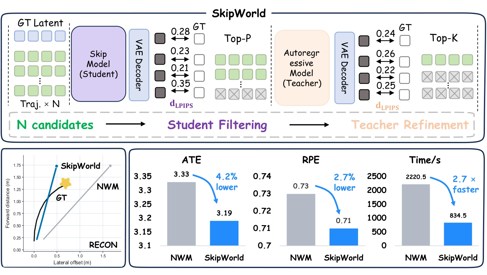

SkipWorld: Latent Skip Planning with Distilled World Models for Efficient Visual Navigation
arXiv 2026 · Under reviewClosed-loop latent prediction, long-stride distillation, and coarse-to-fine trajectory evaluation for efficient world-model-based navigation.
Paper ↗
BibTeX
@misc{yang2026skipworld,
title={SkipWorld: Latent Skip Planning with Distilled World Models for Efficient Visual Navigation},
author={Yang, Yifei and Fan, Zehua and Yan, Zike and Li, Zhongyu and Wang, Yan},
year={2026},
eprint={2610.18135},
archivePrefix={arXiv},
url={https://arxiv.org/abs/2610.18135}
}